Dominique Makowski
Assistant Professor in Psychology · University of Sussex, Brighton
Trained as a clinical neuropsychologist and CBT psychotherapist, I lead the Reality Bending Lab at the University of Sussex, where we study how we come to take things as real: illusions, deception, fake news, fiction and altered states of consciousness, and the part the body and emotions play in it. I also build open-source tools and am radically engaged in open science. I speak French, English, Polish and Python, and enough Italian to order a pizza. Aside from work, I listen to hard rock and read about the history of psychiatry, art, religion and philosophy. My figures of reference are Marcus Aurelius, Sisyphus and Yoda.
Research
publications →Career
Teaching
I teach Bayesian statistics, interoception and psychophysiology, R and Python Programming, and research tools such as GitHub and agentic coding.
Consulting
I am hired for upskilling workshops, for expertise on research involving neurophysiological signals, or to build bespoke research software and websites.
Software
more on GitHub →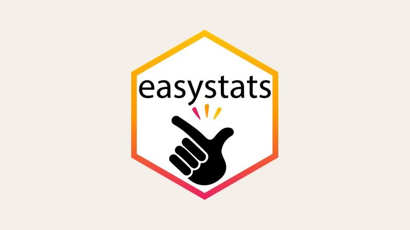
easystatsR packages for easy statistics and good practices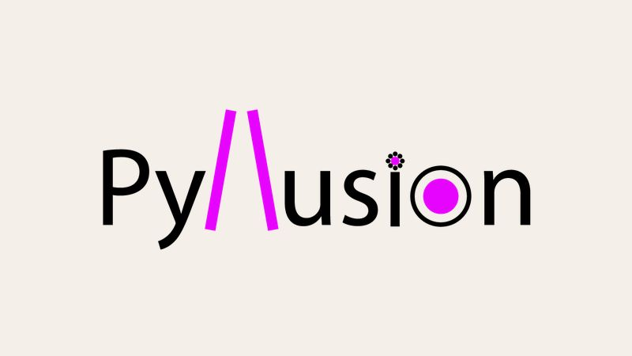
PyllusionPython module for generating visual illusions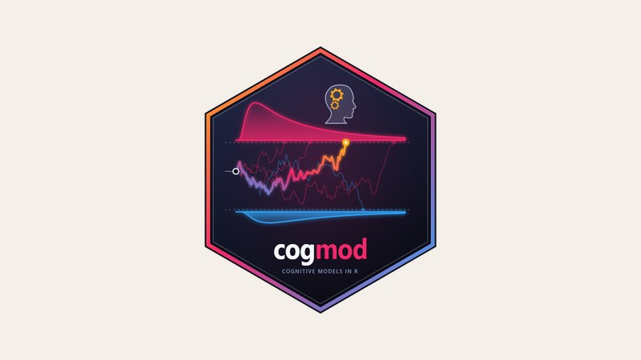
cogmodR package for cognitive models of decisions and subjective scales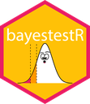
bayestestR Describe Bayesian models and posteriors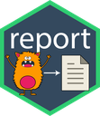
report Automated reporting of statistical models, in plain English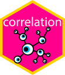
correlation Correlation analysis: Bayesian, partial, multilevel, robust…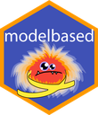
modelbased Model-based predictions, marginal means and contrasts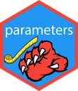
parameters Extract, compute and format model parameters and their uncertainty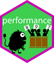
performance Model quality: R², ICC, model checks and comparisons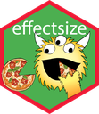
effectsize Compute, convert and interpret effect sizes see Publication-ready plots for statistical models insight Easy access to information from any statistical model datawizard Easy data wrangling and statistical transformations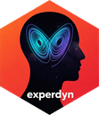
experdyn Nonlinear dynamics and complexity of experience sampling data psycho The ancestor of easystats: an R toolbox for psychologists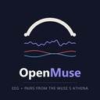
OpenMuse Record and stream EEG and fNIRS from the Muse S Athena headband MuseLSL2 Light, updated interface to stream and record Muse EEG Neuropsydia Create experiments, tasks and questionnaires SubjectiveScalesModels.jl Beta-like regression models for Likert and slider scales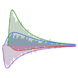
SequentialSamplingModels.jl Evidence accumulation models of decision making RemotePhysiology Measure heart rate via webcam in online experiments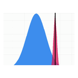
Patient Assessment App Bayesian assessment of neuropsychological patient scores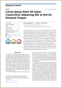
apaquasi Template for fancy-looking APA-style preprints and manuscripts